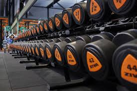
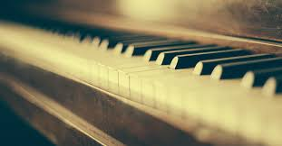
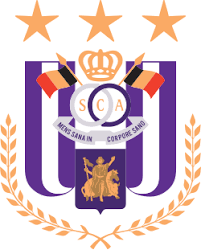

Op deze pagina komt u meer te weten over mijn hobby's en interesses.
Fitness is echt mijn ding. Ik zit vooral in de krachttraining, omdat ik het gewoon geweldig vind om sterker te worden en mijn grenzen te verleggen door mezelf te pushen. Het is niet alleen goed voor mijn lichaam maar ook voor mijn hoofd. Na een dag vol gedoe of stress is de fitness de plek waar ik alles even kan loslaten. Ik vind het lekker om mezelf uit te dagen, telkens net iets meer gewicht, net iets meer herhalingen. en ja, de spierpijn de volgende dag? Dat is voor mij het bewijs dat ik hard heb gewerkt. Het hoort er bij. De Fitness is voor mij niet zomaar een hobby, het is een manier van leven geworden.

Pianospelen is iets wat ik echt met passie doe. Het is voor mij een soort ontspanning, een moment van rust. Als ik achter de piano zit, vergeet ik alles om me heen. Ik kan uren bezig zijn met een stuk oefenen. Wat ik zo mooi vind aan piano is dat je er zobeel gevoel in kunt leggen, zonder ook maar een woord te zeggen. Het is echt mijn creative uitlaapklep.

Voetbal is altijd al een baste waarde geweest in mijn leven, en als het op clubs aankomt, is het simpel: Anderlecht boven alles. Paars-wit zit gewoon in mijn hart. Of ze nu winnen of niet, ik blijf supporteren. Ik hou achter de geschiedenis van de club.
